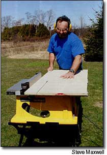
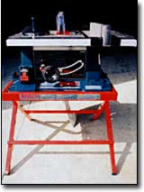
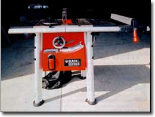
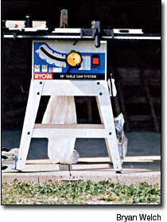
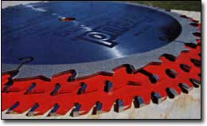

Choosing A Table Saw
How to evaluate the options when you're shopping for one these indispensable power tools.
By Steve Maxwell
August/September 2003
Elation is what you feel when you first discover a good tool, and table saws certainly are good tools. In March 1982, I switched off my first table saw and, as the blade spun to a halt, I couldn't have been happier.
Table saws allow you to cut all kinds of lumber and plywood with great accuracy, safety and ease. I've owned three over the last 20 years, and used a half-dozen other machines while working professionally as a cabinetmaker and carpenter.
Straight, True and Square
If you're planning to build or remodel your home, make furniture or cabinets, or maybe begin a small-scale woodworking venture, you should consider making a table saw your first major tool purchase. Table saws are extremely useful because they create straight, smooth and accurate cuts in lumber, wood-based sheet materials and even some types of plastic. Radial arm table saws, which have the saw mounted above instead of underneath the table, make straight cuts, too, but not in as many different ways as a regular table saw.
Table saws (sometimes called bench saws) have three main parts: a horizontal table that supports wood during use; a circular saw blade that extends up through a slot in the table; and a rip fence that guides the wood over the spinning blade.
The spinning table-saw blade remains stationary during use while the fence slides the wood over it, allowing you to safely cut everything from small, narrow strips of solid wood, to full-size sheets of plywood and particleboard. This means that table saw results are more accurate than anything you can conveniently produce with a hand-held circular saw. And while accuracy has been a hallmark of stationary table saws, the midrange, portable table saws have become more versatile, powerful and safer in the last 10 years. A wide range of sizes are available, from small, ultra-lightweight models costing less than $100, to heavy-duty, nonportable cabinet saws that weigh 500 pounds.
Differences in quality, size and design mean that some table saw models perform better than others on a variety of tasks. The trick, as is usually the case, is "separating the wheat from the chaff" when you prepare to tool-up with a handy table saw.
Buy Quality
Buying tools that are too small or underpowered for the job is a common mistake. This is especially a concern when selecting a table saw because of the proliferation of small, inexpensive saws (less than $100 and 50 pounds). Typical cheap-saw problems are inadequate ripping capacity, insufficient power, flimsy controls and small work surfaces. These limitations lead to short-lived saw performance: Either the saw breaks or you get tired and frustrated with pushing a ma chine beyond its design capacity. Small table saws generally are not as safe to use as larger saws. Plan to spend at least $250 for a quality saw.
Which Kind?
If you haven't yet realized that there's never enough room in a workshop, you probably will someday. That's why a portable saw is ideal in many situations. It frees up floor space between uses and al lows you to take cutting capabilities on the road. Many companies now offer excellent, professional-grade table saws (weighing from 75 to 150 pounds) that are fairly affordable.
The issue of size and weight brings you to the first pre-purchase question: Will your saw be used most frequently in a workshop, or will it always be on the move to different areas of building activity? If stationary use will be the norm, con sider buying a heavyweight, contractor table saw. These semi-portable machines usually come with a stand or casters. They weigh about 100 to 150 pounds, include cast-iron work surfaces and offer a heft that ensures a stable work platform.
The latest breed of contractor saws do a great job with routine homestead projects and fine woodworking. A growing number of models include the same kind of rip fence and work surface normally found on the best 500-pound, stationary, cabinetmaker table saws.
For the nomad sawyer, working in the shop one day, in the back yard the next, and at a buddy's place on the weekend, a lightweight, bench-top table saw is an ideal choice. These smaller contractor saws are designed to operate on top of an existing bench or the tailgate of your pickup. Typically weighing in at about 75 pounds, bench-top saws pack a lot of cutting power into a compact machine, and that's their biggest virtue.
Performance
Don't let their small size confuse you. Although high quality bench-top table saws look similar to those cheap models destined to disappoint, they are different. And price is a powerful clue to what's inside the shipping carton.
Choose a saw with a 10-inch-diameter blade, a sliding guide (called a "fence") that's capable of guiding cuts to the center of a 48-inch-wide sheet of plywood or particleboard, and enough power to handle a full range of cutting challenges. Saws with motors drawing 12 to 15 amps of current, and spinning a full-size, 10-inch blade offer the zest to slice through 2-inch-thick hardwood in a single pass.
Optional accessories worth considering are a folding support stand, enhanced cutting jigs and fixtures.
Dust Control
Most wood gives off a pleasant aroma when it's cut, but wood dust is more than just fragrant - it's also hazardous to your health. Invisible, ultrafine dust particles generated by power tools like table saws are especially hazardous.
Unless you're using a table saw outdoors, you need some kind of dust control or personal dust protection. At a minimum don a dust mask in addition to the eye and ear protection you need to operate a table saw safely. A mask will protect your lungs, though your workshop still will get coated in fine dust. To avoid this, you need some additional equipment. Manufacturers sell dust collection bags that attach directly to the table saw. As the wood is cut, the heaviest sawdust is sucked down into the small bag.
For more extensive dust collection, a wet/dry vacuum that moves 175 to 200 cubic feet per minute (cfm) of air with a 21-inch outlet is a relatively inexpensive, compact and portable option. It will capture most but not all of the fine particles. That's why manufacturers offer whole-shop dust filters that purify ambient air. The filter sits in a box attached to the ceiling. A small fan moves the shop air through the filter, capturing the smaller dust particles. Choose a filter rated to remove dust particles as small as 0.5 microns. A whole-shop filter that moves 600 to 800 cfm of air is ideal for most workshops.
The ultimate dust device attaches directly to the saw. It uses a 1- or 2-horsepower motor, and gathers and filters large amounts of air through a cloth filter bag. Select a unit with a filter bag made of felt. (Thin cloth bags allow a lot of fine dust to escape and could make the dust hazard even worse by broadcasting the contamination.) For more information, read Woodshop Dust Control by Sandor Nagyszalanczy.
Tools for Self-reliance
On June 23, 1891, a man named Ernest Taylor was the first person to sign his name on a deed to the 100-acre parcel of land that is my farm today. He settled with his family, cleared fields and began a relationship with the land that's now mine to preserve and enhance. Every so often I find evidence of the tools associated with the relationship started by Ernest Taylor: a bit of old chain; a rusted horse-shoe turned up in the middle of a field; a remnant of horsedrawn machinery. Regardless of time or place, self-reliance depends on the same three things: know-how, initiative and tools. Implements of self-reliance might look a little different in the 21st century, but despite power cords, fancy colors and brand names, they still help you achieve this same lofty goal.
Blade Basics
Many otherwise great saws come from the factory with second-rate blades. Part of your commitment to getting excellent table-saw performance means buying a high quality, carbide blade that's designed for the work you intend to do. Any blade worth owning includes small blocks of extra-hard carbide metal that form the cutting teeth around the blade's circumference. These wear-resistant carbide blades outperform older all-steel equivalents by more than 10 to 1.
For general cutting of solid wood, along (ripping) and across (cross-cutting) the grain, plus some rough cutting in plywood, select a combination blade (shown in the middle, at Right). Typical 10-inch-diameter combination designs have 50 teeth around the edge of the blade, gathered in groups of five, with a large space between each group to accommodate sawdust.
Heavy cutting of solid wood along the grain is best done with a dedicated ripping blade (shown on top). These include a couple of dozen coarse teeth arranged evenly around the blade, with lots of space for sawdust dispersal between each tooth. Fine cutting of veneered plywood, melamine-coated particleboard and thin sheet materials is best done with an extra-fine blade (shown on the bottom), sold exclusively for the job. Blades of this sort usually have 80 teeth evenly spaced around the 10inch-diameter disc. All carbide blades can be resharpened professionally, yielding an extremely long working life.
Buy anti-kickback blades whenever you can. "Kickback" describes a sudden and dangerous event where the blade grabs the work piece and hurls it back at the table saw operator. The anti-kickback blade design includes a small ridge of metal in front of each tooth (or each group of teeth in the case of a combination blade). These ridges limit the amount of wood each tooth can bite off, yielding much safer operation. Anti-kickback designs don't interfere with normal saw-blade action or performance; they just reduce the chances that a work piece will be caught and flung back at you by the blade.
|
 STEVE MAXWELL The author using a DeWalt DW 744S. It has a 19-by-26-inch tabletop, and sells for about $500. This 64-pound table saw can be easily removed from its folding stand. |
 LEN CHURCHILL Diagram of a standard table saw. |
 BRYAN WELCH Bosch's 4000-07, with a 21-by-29-inch tabletop, weighs 64 pounds without the stand and sells for about $500. |
|
 BRYAN WELCH Black and Decker's BT 2500 has a spacious 24-by-40-inch tabletop, weighs 150 pounds and sells for about $360. |
 BRYAN WELCH The Ryobi BT 3100's two extra wheels make moving it easier. The saw has a 25- by-41-inch tabletop, weighs 107 pounds and sells for less than $300. |
 MOTHER EARTH NEWS STAFF For general cutting of solid wood, along (ripping) and across (cross-cutting) the grain, plus some rough cutting in plywood, select a combination blade. |